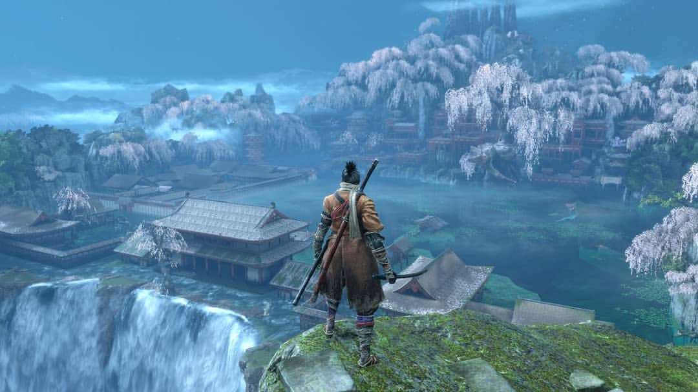

Story
Sekiro is set in feudal Japan, 1555. The game follows the story of the Wolf,who is a Shinobi, which bascically means he is strong enough to kill a god but is bascially a slave.
Sekiro: Shadows Die Twice is an action-adventure game developed by FromSoftware, the creators of the Dark Souls series. Which should be enough warning to keep a sane person sway but i am not sane.
Sekiro features challenging combat, which will make you want to kill yourself and never ever play a game again in your life. Players take on the role of the Wolf, a shinobi on a quest to rescue his master(Minor), but why? If the kid is so great ask him to defend himself and give me a new arm..
Sekiro is set in feudal Japan, 1555. The game follows the story of the Wolf,who is a Shinobi, which bascically means he is strong enough to kill a god but is bascially a slave.